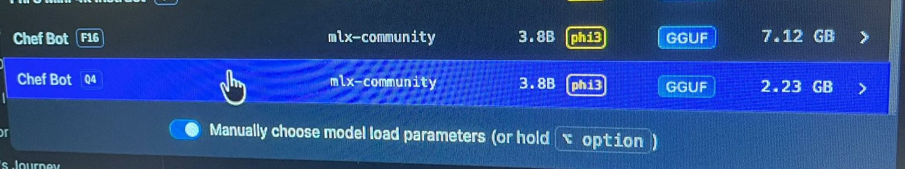

Por Izan López
Para alcanzar la máxima eficiencia, es imperativo configurar un entorno optimizado. En este proyecto, hemos reutilizado la arquitectura de modelos previamente entrenados, centrando el esfuerzo en la compresión sin pérdida crítica de rendimiento.
1. Entorno de Ejecución: Despliegue de dependencias y motor MLX, diseñado específicamente para aprovechar la arquitectura unificada de Apple Silicon.
2. Compilación Core: Configuración de llama.cpp mediante CMake para habilitar la aceleración por hardware (Metal GPU).
3. Fusión de Pesos (Merging): Proceso de integración de los adaptadores LoRA entrenados con el modelo base original para generar un modelo unificado.
La cuantización reduce la precisión de los pesos del modelo para minimizar su huella de memoria y acelerar la inferencia.
Paso A: Conversión al formato GGUF
Transformamos el modelo fusionado a un formato universal de alta precisión (FP16).
Paso B: Compresión 4-bit (Q4_K_M)
Aplicamos el algoritmo de cuantización para obtener el archivo final optimizado.

Conclusión técnica: La optimización no solo reduce el almacenamiento en un 68%, sino que impacta directamente en la velocidad de respuesta. Se observa una reducción significativa de la latencia (tokens por segundo), permitiendo que el modelo cuantizado sea extremadamente ágil en comparación con su versión original.